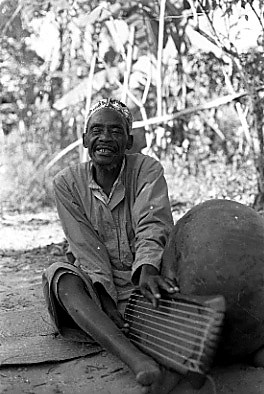
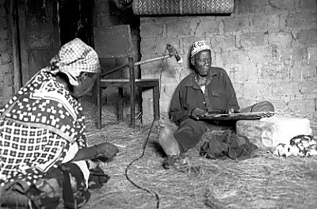
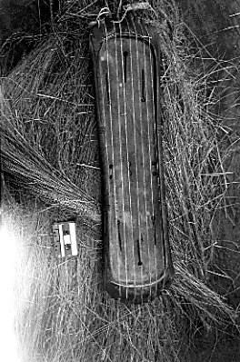
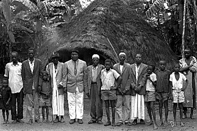
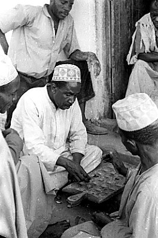
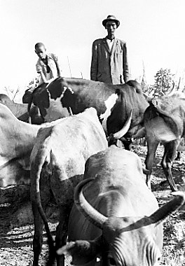
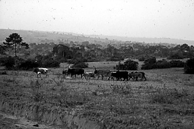
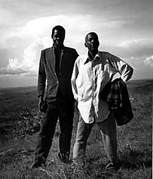

Library
Ten performances recorded in Tanzania, mid to late 20th century
Introductory Essays

Rojabo, who performed at a royal court in the past and served as the muezzin at a mosque, demonstrates enanga playing outside his home in Kihanja, 1969.

Abdallah “Feza” Kaluandila tunes his enanga instrument as his wife and I look on.

Feza’s enanga.
Elias Kashula and Winifred Kisiraga preserve cultural heritage by transcribing and editing tape recorded performances.

Dionies Lutanzibwa and members of his clan outside the traditional building where he invited Muzee to perform and be recorded.

Haji Abdallah (lower right) observes a game of olwesho outside his butchery, 1969. The game of kings and men, it has 4 rows of 8 cells, twice as many as mankala.

Mzee Enoch herds Ankole cattle in Kihanja, 1969.

Cattle in the interlacustrine landscape of Kagera, 1969.

Joeli Bake proudly poses with his son just outside his village of Bugengele at the escarpment. In the distance Lake Victoria can be seen, and Uganda, I am told.